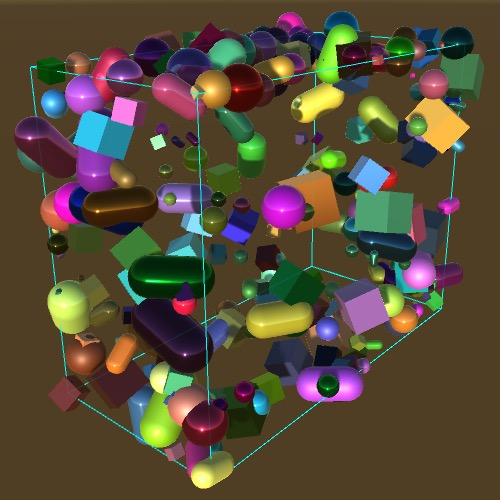

Spawn Zones
Level Variety
- Create a spawn zone and transform it.
- Use gizmos to visualize spawn zones.
- Support a different spawn zone per scene.
- Connect objects from different scenes.
- Create multiple spawn zone types.
This is the fifth tutorial in a series about Object Management. It's about making objects spawn in more varied patterns, configurable per level.
This tutorial is made with Unity 2017.4.4f1.
Spawn Points
Our simple game is about spawning random shapes. The material and color of each shape are randomly chosen, and so are its position, rotation, and scale. Although the spawn points are randomized, they are constrained to a spherical region with a radius of five units, centered on the world origin. Once enough objects have been spawned, they will form a recognizable sphere. This is the spawn zone that we have hard-coded into our game.
We do not have to restrict ourselves to a single spawn zone. We could make it possible for shapes to spawn in different configurations. To do so, we have to replace our fixed code with a configurable spawn zone.
Spawn Zone Component
Create a new SpawnZone component type. Its only purpose is to provide spawn points, so give it a Vector3 SpawnPoint property. This provides a way to get points—not to set them—so it only needs a get block. That makes it a getter-only or readonly property. We'll begin by still returning a random point inside a sphere with a radius of five units.
using UnityEngine;
public class SpawnZone : MonoBehaviour {
public Vector3 SpawnPoint {
get {
return Random.insideUnitSphere * 5f;
}
}
}
Add a Spawn Zone game object to the main scene and attach the new component to it. We now have a spawn zone in the game, but nothing's using it yet.
Using the Zone
The next step is to have Game retrieve its spawn points from the separate spawn zone. Add a public field for that and use it in CreateShape to get a spawn point.
public SpawnZone spawnZone;
…
void CreateShape () {
Shape instance = shapeFactory.GetRandom();
Transform t = instance.transform;
//t.localPosition = Random.insideUnitSphere * 5f;
t.localPosition = spawnZone.SpawnPoint;
…
}
Connect the spawn zone via the inspector. Although the game still behaves the same, it now relies on the Spawn Zone object.
Transforming the Zone
Because the spawn zone is part of a game object, we can move it around. To have that influence the spawn points, add the object's position to the random point. By using the position property of the Transform component instead of localPosition, it's possible to make the spawn zone a child of another object. That way the spawn zone could be attached to something else, which might be moving.
public Vector3 SpawnPoint {
get {
return Random.insideUnitSphere * 5f + transform.position;
}
}
We can go a step further and apply the entire transformation of the game object hierarchy to the spawn point. Then we can also rotate and scale the zone. To do this, invoke the TransformPoint method of the zone's Transform component, with the random point as an argument. We can now do away with the multiplication by five, instead controlling the zone's radius by setting its object's scale.
//return Random.insideUnitSphere * 5f + transform.position;return transform.TransformPoint(Random.insideUnitSphere);
This also makes it possible to deform the sphere, by using a nonuniform scale.
Surface Only
We don't have to pick a spawn point inside the sphere's radius. It is also possible to get a point on the sphere's surface, by using Random.onUnitSphere instead of Random.insideUnitSphere. Let's make that an option, by adding a surfaceOnly toggle field to the zone.
[SerializeField]
bool surfaceOnly;
public Vector3 SpawnPoint {
get {
return transform.TransformPoint(
surfaceOnly ? Random.onUnitSphere : Random.insideUnitSphere
);
}
}
Spawning only on the surface makes the shape of the sphere more obvious.
Zone Visualization
Now that it is possible to adjust the spawn zone, it would be helpful if we could see its shape, without having to spawn lots of points. We can draw a visual aid in the scene view, by adding a void OnDrawGizmos method to SpawnZone. This is a special Unity method that gets invoked each time the scene window is drawn.
Inside OnDrawGizmos, invoke Gizmos.DrawWireSphere to draw a wire representation of a sphere, which renders three circles. We have to supply it with a position and radius, for which we'll use the zero vector and 1, describing the unit sphere.
void OnDrawGizmos () {
Gizmos.DrawWireSphere(Vector3.zero, 1f);
}
The default gizmo color is white, but you can use a different color by changing the Gizmos.color property. This helps to differentiate it from other gizmos. Let's use cyan for our spawn zone gizmo.
void OnDrawGizmos () {
Gizmos.color = Color.cyan;
Gizmos.DrawWireSphere(Vector3.zero, 1f);
}
Currently, our wire sphere is drawn at the origin with a radius of one, regardless of the zone's transformation. The gizmos are drawn in world space by default. To change this, we have to indicate which transformation matrix should be used instead, via the Gizmos.matrix property. We can get the required matrix via the localToWorldMatrix property of our zone's Transform component.
void OnDrawGizmos () {
Gizmos.color = Color.cyan;
Gizmos.matrix = transform.localToWorldMatrix;
Gizmos.DrawWireSphere(Vector3.zero, 1f);
}
A Zone per Level
Now that we can configure spawn zones, the next step is to make it possible for each level to have its own spawn zone.
Migrating to a Different Scene
We can move objects between open scenes via dragging in the hierarchy window. Do this with the Spawn Zone object, moving it from Main Scene to Level 1.
The zone is now part of the level, but Unity warns us that it detected a cross-scene reference. Unfortunately, direct references between objects in different scenes cannot be saved, because the scenes might not be open at the same time. Currently, the spawn zone reference of Game indicates a scene mismatch, and after a save or play it will be cleared.
Game needs a reference to a spawn zone, but because we now store it in a different scene we cannot save such a reference. The simplest change would then be to replace the spawnZone field with a public property. Let's explicitly name it SpawnZoneOfLevel, to indicate that it isn't part of the main scene, but of a level scene.
//public SpawnZone spawnZone;public SpawnZone SpawnZoneOfLevel { get; set; } … void CreateShape () { Shape instance = shapeFactory.GetRandom(); Transform t = instance.transform; t.localPosition = SpawnZoneOfLevel.SpawnPoint; … }
Finding the Game
Someone needs to set the SpawnZoneOfLevel property. This can only be done after a level has been loaded. Indeed, it has to be done each time a level has been loaded, because each must have its own spawn zone. The question is who is responsible for this.
Although Game controls the loading of levels, it doesn't have direct access to the level contents. It would need to retrieve the root objects of the level scene and then search for the correct object. Alternatively, we can make it the responsibility of the level to set the SpawnZoneOfLevel property after it has been loaded. Let's do that.
In order to set SpawnZoneOfLevel, the level must first somehow get a reference to the Game object in the main scene. There is only a single Game instance, so we can store a reference to it in a static Instance property of the Game class. Everyone is allowed to get this reference, but only Game is allowed to set it. This is an example of the singleton design pattern.
public static Game Instance { get; private set; }
When our game instance awakens, it should assign itself to the Instance property. An object can get a reference to itself via the this keyword.
void Start () {
Instance = this;
…
}
While this works when entering play mode and in builds, the static property doesn't persist between compilation while in play mode in the editor, because it isn't part of Unity's game state. To recover from recompilation, we can set the property in an OnEnable method as well. That method gets invoked by Unity each time the component gets enabled, which also happens after each recompile.
void OnEnable () {
Instance = this;
}
As we now depend on other code to access Game, it is a good idea to properly hide its configuration fields. Instead of using public fields, use serialized private fields instead, like we already do for the factory and spawn zone.
//public ShapeFactory shapeFactory;[SerializeField] ShapeFactory shapeFactory; …
I've only shown the change for shapeFactory, but do the same for the key configuration fields, storage, and level count. Usually attributes are placed above whatever they apply to, but because there are a lot of fields I've put them on the same line in this case.
Game Level
To have a level connect the spawn zone, we need to add code to do this. While we could add this functionality to SpawnZone, that class should ideally be dedicated to spawn zones and not be responsible for anything else. It shouldn't need to know about the rest of the game. So we'll create a new GameLevel component type to set things up. It needs to know which spawn zone to use, so give it a configuration field for that. Then when it becomes active, have it grab the globally available Game.Instance property. It can use that to set the SpawnZoneOfLevel property of Game.
We'll make the connection in Start, so it happens after the level has been loaded. Also, when entering play mode in the editor the currently active scene is loaded first. By waiting until Start, we guarantee that Game.OnEnable has already executed and set Game.Instance, even if Main Scene wasn't the active scene.
using UnityEngine;
public class GameLevel : MonoBehaviour {
[SerializeField]
SpawnZone spawnZone;
void Start () {
Game.Instance.SpawnZoneOfLevel = spawnZone;
}
}
Add a game object with this component to the level scene and connect it to the spawn zone.
This means that the Game Level object holds a saved reference to the Spawn Zone object, which is allowed because both exist in the same scene. When the game is playing, Game Level will grab a temporary reference to Game via Game.Instance, which it uses to give Game a temporary reference to Spawn Zone. So GameLevel hooks things up and is aware of both Game and SpawnZone. In turn, Game is only aware of SpawnZone. Finally, SpawnZone doesn't know about the other two at all.
Also give Level 2 its own Spawn Zone and Game Level object. The game will work as before, but now you can adjust the spawn zones per level.
Zone Types
Because spawn zones have their own class, it is now possible to extend it and create other zone types. For example, besides a sphere zone we could also add support for a cube zone.
Abstract Spawn Zone
No matter the specific spawn zone type, their common functionality is that of providing spawn points. The SpawnZone class defines this basis. Remove all code specific to the sphere zone, leaving only the default definition of the SpawnPoint property.
public class SpawnZone : MonoBehaviour {
//[SerializeField]
//bool surfaceOnly;
public Vector3 SpawnPoint { get; }
// get {
// return transform.TransformPoint(
// surfaceOnly ? Random.onUnitSphere : Random.insideUnitSphere
// );
// }
//}
//void OnDrawGizmos () {
// …
//}
}
This defines the abstract functionality of a spawn zone. To make that explicit, mark the class with the abstract keyword, and the property as well.
public abstract class SpawnZone : MonoBehaviour {
public abstract Vector3 SpawnPoint { get; }
}
SpawnZone is now an abstract type, a class of which no instance can be created. As a consequence, Unity will complain that our spawn zone components have become invalid. We'll have to replace them with specific subclasses.
Sphere Zone
First, we'll recreate our spherical spawn zone component, but now as a new SphereSpawnZone type that extends SpawnZone. The only other difference with the old code is that we have to indicate that it overrides the abstract SpawnPoint property with a concrete implementation. This must be made explicit by adding the override keyword to it.
using UnityEngine;
public class SphereSpawnZone : SpawnZone {
[SerializeField]
bool surfaceOnly;
public override Vector3 SpawnPoint {
get {
return transform.TransformPoint(
surfaceOnly ? Random.onUnitSphere : Random.insideUnitSphere
);
}
}
void OnDrawGizmos () {
Gizmos.color = Color.cyan;
Gizmos.matrix = transform.localToWorldMatrix;
Gizmos.DrawWireSphere(Vector3.zero, 1f);
}
}
Adjust the Spawn Zone object of the Level 1 scene so it uses this component. Also restore the reference of Game Level, which got lost when SpawnZone became an invalid component. Level 2 needs to be fixed as well.
Cube Zone
Next, also create a cube spawn zone type, named CubeSpawnZone. Start with the minimal functionality of a spawn zone, which is just a SpawnPoint property that returns the zero vector.
using UnityEngine;
public class CubeSpawnZone : SpawnZone {
public override Vector3 SpawnPoint {
get {
return Vector3.zero;
}
}
}
There is no convenient Random.insideUnitCube property, so we have to construct the random point ourselves. A unit cube is centered on the origin and has an edge length of one unit. So its volume extends by half a unit in both directions in each dimension. To get a random point inside this space, we can invoke Random.Range(-0.5f, 0.5f) for each of the three vector coordinates separately, then transform the resulting point.
public override Vector3 SpawnPoint {
get {
Vector3 p;
p.x = Random.Range(-0.5f, 0.5f);
p.y = Random.Range(-0.5f, 0.5f);
p.z = Random.Range(-0.5f, 0.5f);
return transform.TransformPoint(p);
}
}
There is a Gizmos.DrawWireCube method, so we can use that to display a gizmo for our cube zone. Its first parameter is the cube's center, while the second is its edge length.
void OnDrawGizmos () {
Gizmos.color = Color.cyan;
Gizmos.matrix = transform.localToWorldMatrix;
Gizmos.DrawWireCube(Vector3.zero, Vector3.one);
}
Let's also add a surface-only option for our cube zone. When enabled, we have to adjust the spawn point so it ends up on one of the faces of the cube. We can do that by beginning with a random point inside the cube and then moving it along one axis until it aligns with a face. The index of the axis can be chosen randomly.
[SerializeField]
bool surfaceOnly;
public override Vector3 SpawnPoint {
get {
Vector3 p;
p.x = Random.Range(-0.5f, 0.5f);
p.y = Random.Range(-0.5f, 0.5f);
p.z = Random.Range(-0.5f, 0.5f);
if (surfaceOnly) {
int axis = Random.Range(0, 3);
}
return transform.TransformPoint(p);
}
}
It is possible to access a Vector3 value with this index as if it were an array, getting or setting its corresponding coordinate. This way, we can align that component with either the positive or negative face along the axis. We can use the original coordinate to decide which side to pick. If it's negative, we'll move it to the negative face, otherwise to the positive face. That shifts the point to the nearest of the two faces.
int axis = Random.Range(0, 3); p[axis] = p[axis] < 0f ? -0.5f : 0.5f;

Composite Zone
Finally, let's create a composite spawn zone type, which is defined by a collection of other spawn zones. That makes it possible to create more complex zones, consisting of multiple separate and possibly overlapping regions.
Add a CompositeSpawnZone class, have it extend SpawnZone, and give it a spawnZones array field.
using UnityEngine;
public class CompositeSpawnZone : SpawnZone {
[SerializeField]
SpawnZone[] spawnZones;
}
Its SpawnPoint property picks a random index from the zones array, then uses that zone's property to get the spawn point.
public override Vector3 SpawnPoint {
get {
int index = Random.Range(0, spawnZones.Length);
return spawnZones[index].SpawnPoint;
}
}
Create a Level 3 scene and increment the level count in Game to try out our new composite spawn zone. Make sure that it also has a Game Level object that gets a reference to the spawn zone, bake its lighting, and include it in the build settings.
To make the composite zone work, we'll have to create some more zones of different types. For example, create two sphere zones and two cube zones, a solid and a surface-only version of each, so you can see them all at the same time. Drag these four zones onto the Spawn Zones array field of the composite zone. A quick way to do this is to lock the inspector while the composite zone is selected, by clicking on the lock icon at the top right of the inspector window. Then select the four other zones and drag the whole selection onto the array. After that, unlock the inspector.
The zones that are part of the composite zone can be anywhere in the same scene. They don't have to be children of the composite zone object, but if they are then transforming the composite zone will affect them all.
It is even possible to add multiple spawn zone components to the same game object, but then you cannot transform them individually.
Besides sphere, cube, and composite zones, you could create many more spawn zone types. I've included the most straightforward ones in this tutorial. Also, there are convenient gizmos for cubes and spheres only. You'll have to be more creative to show gizmos for other shapes.
The next tutorial is More Game State.